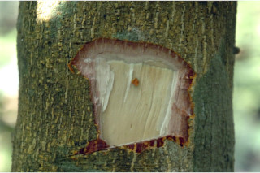
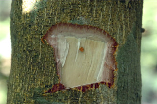
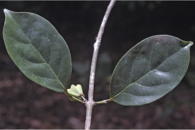
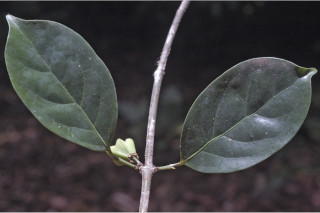
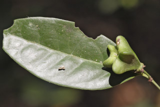
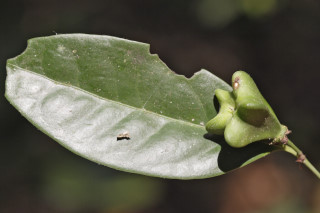

Small trees, up to 7 m tall.
7 ಮೀ ಎತ್ತರದವರೆಗೆ ಬೆಳೆಯುವ ಸಣ್ಣ ಮರಗಳು
7 മീറ്റര് വരെ ഉയരത്തില് വളരുന്ന, ചെറുമരങ്ങള്.
சிறிய மரம் 7 மீ. உயரம் வரை வளரக்கூடியது
Bark corky, yellow when scrap; blaze reddish.
ತೊಗಟೆ ಬೆಂಡು ಮಾದರಿಯಲ್ಲಿದ್ದು ಗೀಚಿದಾಗ ಹಳದಿ ಬಣ್ಣ ಹೊಂದಿರುತ್ತದೆ; ಕಚ್ಚು ಮಾಡಿದ ಜಾಗ ಕೆಂಪು ಬಣ್ಣದಲ್ಲಿರುತ್ತದೆ.
കോര്ക്കുനിറഞ്ഞ പുറംതൊലി, ചുരിയാല് മഞ്ഞനിറം; വെട്ട്പാടിന് ചുവപ്പുനിറം.
மிருதுவான பொரிந்த பட்டை, பட்டையை சுரண்டினால் மஞ்சள் நிறத்துடன் காணப்படும்; பட்டையின் உட்புறம் சிவப்பு நிறமுடையது.
Branchlets subterete, glabrous.
ಕಿರುಕೊಂಬೆಗಳು ಉಪ-ದುಂಡಾಗಿದ್ದು ರೋಮ ರಹಿತವಾಗಿರುತ್ತದೆ.
ഏതാ് ഉരുതും, അരോമിലവുമായി ഉപശാഖകള്.
சிறிய நுனிக்கிளைகள் குறுக்குவெட்டுத் தோற்றத்தில் சற்று வளையமானது, உரோமங்களற்றது.
Leaves simple, opposite, decussate; stipules caducous; petiole 0.3-0.8 cm long, planoconvex in cross section, glabrous; lamina 5-11 x 2-4.3 cm elliptic or narrow elliptic, apex bluntly acuminate, sometimes obtusely acute, base cuneate, margin entire, glabrous, smooth shining above, chartaceous or subcoriaceous; midrib raised above; secondary_nerves 4-5 pairs, not prominent beneath; tertiary_nerves obscure.
ಎಲೆಗಳು ಸರಳವಾಗಿದ್ದು ಕತ್ತರಿಯಾಕಾರದ ಅಭಿಮುಖ ಜೋಡನಾ ಮಾದರಿಯಲ್ಲಿರುತ್ತವೆ; ಕಾವಿನೆಲೆಗಳು ಉದುರಿ ಹೋಗುವಂತಹುಗಳು; ಎಲೆ ತೊಟ್ಟುಗಳು 0.3 ರಿಂದ 0.8 ಸೆಂಮೀ ಉದ್ದವಾಗಿದ್ದು, ಅಡ್ಡಸೀಳಿದಾಗ ಸಪಾಟ ಪೀನಮಧ್ಯ ಆಕಾರದಲ್ಲಿರುತ್ತದೆ ಹಾಗೂರೋಮರಹಿತ -ವಾಗಿರುತ್ತದೆ; ಎಲೆಪತ್ರಗಳು 5-11 x 2-4.3 ಸೆಂ.ಮೀ ಗಾತ್ರ , ಅಂಡವೃತ್ತ ಅಥವಾ ಸಂಕುಚಿತ ಅಂಡವೃತ್ತಾಕಾರ ಹೊಂದಿದ್ದು, ಮೊಂಡಾದ ಅಗ್ರವುಳ್ಳ ಕ್ರಮೇಣ ಚೂಪಾಗುವ ಮಾದರಿಯ, ಕೆಲವು ವೇಳೆ ಮೊಂಡು-ಚೂಪುಳ್ಳ ತುದಿಯನ್ನೂ, ಬೆಣೆಯಾಕಾರದ ಬುಡವನ್ನೂ ಹೊಂದಿರುತ್ತವೆ, ಎಲೆಗಳ ಅಂಚು ನಯವಾಗಿರುತ್ತದೆ, ಎಲೆಗಳು ರೋಮರಹಿತವಾಗಿದ್ದು ಮೇಲ್ಭಾಗದಲ್ಲಿ ಹೊಳಪು ಹಾಗೂ ಕಾಗದವನ್ನೋಲುವ ಅಥವಾ ಉಪ-ತೊಗಲನ್ನು ಹೋಲುವ ಮೇಲ್ಮೈ ಹೊಂದಿರುತ್ತದೆ;ಎರಡನೇ ದರ್ಜೆಯ ನಾಳಗಳು 4 ರಿಂದ 5 ಜೋಡಿಗಳಿದ್ದು 1ರಿಂದ 3 ಹೂಗಳನ್ನೊಳಗೊಂಡಿ ರುತ್ತವೆ; ಮೂರನೇ ದರ್ಜೆಯ ನಾಳಗಳು ಅಸ್ಪಷ್ಟ.
സമ്മുഖ, ഡെക്കുസേറ്റ് ക്രമത്തിലുള്ള ലഘുപത്രങ്ങള്; പെട്ടെന്ന് കൊഴിഞ്ഞുപോകകുന്ന അനുപര്ണ്ണങ്ങള് ഇലെഞെട്ടിന് 0.3 സെ.മി മുതല് 0.8 സെ.മി വരെ നീളം, കുറുകേയുള്ള ഛേദത്തില് മുകളില് പരന്നും കീഴെ വക്രിച്ചുമിരിക്കുന്ന ഘടന, അരോമിലം; പത്രഫലകത്തിന് 5 സെ.മി മുതല് 11 സെ.മി വരെ നീളവും 2 സെ. മി മുതല് 4.3 സെ.മി വരെ വീതിയും, ദീര്ഘവൃത്തീയമോ, വീതികുറഞ്ഞ ദീര്ഘവൃത്തീയമോ ആകൃതി, മുനപ്പില്ലാത്ത ചെറുവാലോടുകൂടിയ പത്രാഗ്രം, ചിലപ്പോള് ഉപകോണാകാരവിധത്തില് കൂര്ത്തതാവാം, ആപ്പാകൃതിയിലുള്ള പത്രാധാരം, അവിഭജിതമായ അരികുകള്, അരോമിലം, തിളങ്ങുന്ന മുകള്ഭാഗം, കടലാസ്പോലത്തെ പ്രകൃതമോ ഉപചര്മില പ്രകൃതമോ; മുകളില് ഉയര്ന്നിരിക്കുന്ന മുഖ്യസിര; 4ഓ, 5ഓ ജോഡി ദ്വിതീയ ഞരമ്പുകള്, കീഴ്ഭാഗത്ത് ഏറെ വ്യക്തമല്ല; ത്രിതീയ ഞരമ്പുകള് അപ്രസക്തം
இலைகள் தனித்தவை, எதிரடுக்கமானவை, குறுக்குமறுக்கமானவை; இலையடிச்செதில் உதிரக்கூடியது; இலைக்காம்பு 0.3-0.8 செ.மீ. நீளமானது, குறுக்குவெட்டுத் தோற்றத்தில் பிளேனோகான்வக்ஸ், உரோமங்களற்றது; இலை அலகு 5-11 X 2-4.3 செ.மீ., நீள்வட்டம் அல்லது குறுகிய நீள்வட்டம், அலகின் நுனி மழுங்கிய அதிக்கூரியது போன்று நீண்டது, சிலவற்றில் மழுங்கியதுடன் கூரியது, அலகின் தளம் ஆப்பு வடிவமுடையது, அலகின் விளிம்பு முழுமையானது உரோமங்களற்றது, மேற்பரப்பு பளபளப்பானது, சார்ட்டேசியஸ் அல்லது சப்கோரியேசியஸ்; மையநரம்பு மேற்புறத்தில் அலகின் பரப்பைவிட உயர்ந்து இருக்கும்; இரண்டாம் நிலை நரம்புகள் 4-5 ஜோடிகள், கீழ்பரப்பில் தெளிவற்றது; மூன்றாம் நிலை நரம்புகள் தெளிவற்றது.
Inflorescence 1-3 flowered axillary cymes; flowers red; petals fimbriate.
ಪುಷ್ಪಮಂಜರಿ ಅಕ್ಷಾಕಂಕುಳಿನಲ್ಲಿರುವ ಮಧ್ಯಾರಂಭಿ ಮಾದರಿಯಲ್ಲಿದ್ದು ದರಿಂದ ಮೂರು ಹೂಗಳನ್ನು ಹೊಂದಿರುತ್ತವೆ; ಹೂಗಳು ಕೆಂಪು;
പൂങ്കുല 1 മുതല് 3 വരെയുള്ള കക്ഷീയ സൈമുകളാണ്; ചുവപ്പുനിറത്തിലുള്ള പൂക്കള്; അതിസൂക്ഷ്മമായി വിഭജിക്കപ്പെട്ട ദളങ്ങള്.
ஒன்று முதல் மூன்று மலர்கள் கொண்ட இலைக்கோணங்களில் அமைந்த சைம் மஞ்சரி; மலர்கள் சிவப்பு நிறமுடையது; இதழ்கள் பிம்பிரியேட்.
Capsule, valves deeply obcordate; seeds 1-2 per cell.
ಸಂಪುಟ ಫಲಗಳ ಹಾಲೆಗಳು ತಲೆಕೆಳಗಾದ ಹೃದಯಾಕಾರವನ್ನು ಹೊಂದಿದ್ದು ಪ್ರತಿ ಕೋಶದಲ್ಲಿಒಂದರಿಂದ ಎರಡು ಬೀಜಗಳಿರುತ್ತವೆ.
കായ, ആഴത്തില് അപഹൃദയാകാരത്തിലുള്ള വാല്വുകളോടുകൂടിയ കാപ്സ്യൂള് ആണ് ഓരോ അറയിലും 1ഓ 2ഓ വീതം വിത്തുകള്.
கேப்சூல், அறைகளுடையது, தலைகீழ் இதய வடிவமானது ஒவ்வொரு அறையிலும் 1-2 விதைகள் காணப்படும்.
 

 



 
